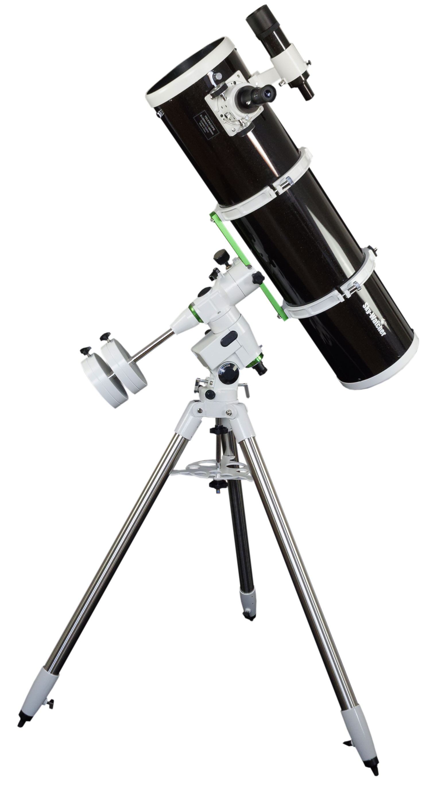

SkyWatcher Explorer 200P Newton
Ez a 200/1000 SkyWatcher Newton többféle mechanikán - a komoly kezdők és haladók főműszere, kiváló asztrofotós távcső is
A termék részletes leírása
A SkyWatcher Explorer 200P 200/1000 mm-es SkyWatcher Newton-reflektor egy életre szóló távcső. Sokoldalú műszer, mind vizuális, mind fotografikus használatra kiváló! Vizuálisan akár 14 magnitúdóig "lemerészkedhetünk" vele, így a fényesebb galaxisokban sötét égen már részleteket pillanthatunk meg (spirálkarok, stb), és a fényesebb ködökben is szép részleteket láthatunk. Hold- és bolygómegfigyelésre is kiváló, egy nyugodt, rezzenéstelen légkörrel rendelkező éjszakán szenzációs részleteket mutathat meg a bolygók és a Hold felszínéről. Éppúgy alkalmas szoros kettőscsillagok vizsgálatára is, köszönhetően a precízen megmunkált optikának (min. diffrakció határolt minőség) és a 20cm-es átmérőnek.
Asztrofotózásra is bátran használhatjuk, hiszen a hold-és bolygókhoz kellően precíz az optika, és könnyen élesíthetjük a képet a finoman járó tartozék 2"-es Crayford-rendszerű fókuszírozóval. Mély-ég (halvány) objektumok fotózáshoz is kiváló, hiszen F/5-ös fényereje már elég rövid idő alatt kellően sok fényt gyűjt, miközben 1000mm-es fókusz már kellően nagy nagyítást ad ahhoz, hogy a kis kiterjedésű halvány objektumok (pl. galaxisok) is szép részletesen jelenjenek meg a képen. 2"-es kihuzatába további fotografikus kiegészítők illeszthetőek (pl. kómakorrektor).
Fényképezésre (ha ez lenne a legfőbb felhasználás) legalább HEQ5 vagy nagyobb mechanikán válasszuk.
A műszeregyüttes autóval kiválóan hordozható, hiszen a távcső tubusa 1 méter hosszú és 9,2 kg. A mechanika több elemre szerelve könnyen szállítható.
Kinek ajánljuk? Komoly kezdőknek, akik életre szóló műszert szeretnének minden megfigyelési területre, különösen mélyég-észlelésre.Kezdőként azonban nem érdemes ennél nagyobb távcsövet választani. Haladó amatőröknek, akik nagyobb, akár életre szóló főműszert keresnek. Az asztrofotózás iránt komolyan érdeklődők számára. Olyanoknak, akiknek nem kell sűrűn kitelepülniük, akik külvárosban, kisebb településen élnek, panorámás erkéllyel, tetőterasszal, udvarral rendelkeznek.
Az optikák beállítása, jusztírozása a távcső tubus hátulján szerszám nélkül,
kézi csavarokkal gyorsan és egyszerűen elvégezhető, amennyiben az szükségessé válna.
(A jusztírozás megkönnyítéséhez jusztírlézert, vagy kollimációs okulárt javaslunk).